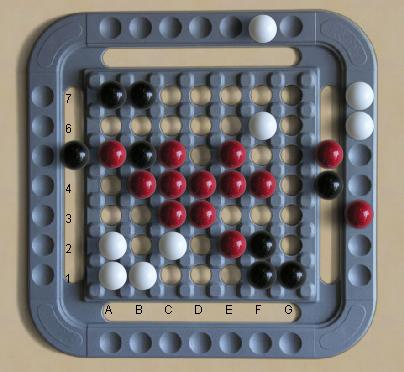

Volcano |
|
Qyshinsu |
| Register |
Get the application |
Traboulet
Traboulet (also known as Kuba and Akiba) is a pushing game, with a
clever mechanical construction which enforces the movement rules.
It looks superficially like Abalone, except on a square
grid,
but it is a completely independantly invented game. The rules are here. |
 |
| Traboulet
rankings at
Boardspace |
Traboulet at
BoardGameGeek |
| Traboulet win/loss database | Inventor Serge Cahu's Traboulet |
|
|
Site Map |
Go to BoardSpace.net home page |